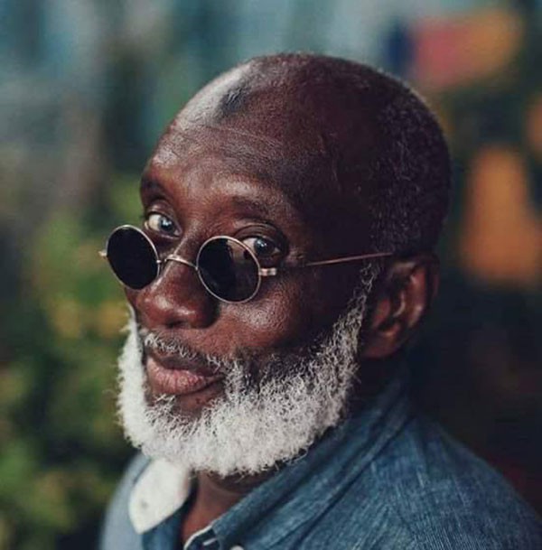

Écrivain et artiste-peintre sénégalais, connu de tous sous le nom de « Berger de l'île de Ngor ». Ingénieur devenu peintre à 60 ans, il a consacré douze années à une œuvre habitée par une question : quelle humanité pour demain ?

Abdoulaye Diallo, sur l'île de Ngor
Après une carrière dans les télécommunications, le Berger découvre la peinture à 60 ans — une vocation tardive qui marquera profondément la scène artistique sénégalaise.
« La mère est au début et à la fin de tout. »Abdoulaye Diallo — Biennale de Dakar, mai 2022
Sur la deuxième plage de l'île de Ngor, « Le Penc » était entièrement dédié à l'art — peinture, littérature, cinéma — et devenu un lieu incontournable. Plus qu'un peintre, Diallo était considéré comme un sage, dont chaque parole invitait à la réflexion.
De l'ingénieur ECE Paris au sage de Ngor : une vie racontée en dates et en tournants.
Lire la biographie → GalerieGrands formats, femmes et figures universelles : les toiles majeures du Berger.
Voir la galerie → ArchivesEntretiens et témoignages filmés, pour entendre sa voix et celle de ses proches.
Regarder →